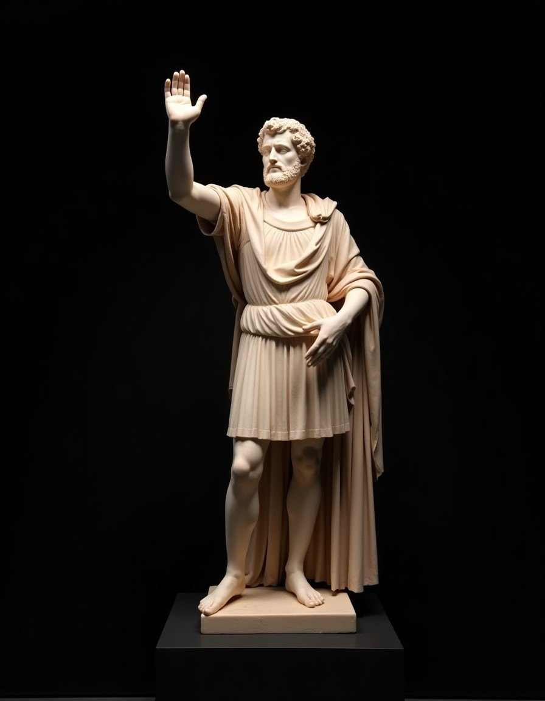

AV
Augustus
27 BC – AD 14
Found Rome built of sun-dried clay, and left it constructed of solid marble.
From Augustus to Romulus Augustulus, meet every man who ruled the Western Roman Empire—and discover how most of them met their bitter, chaotic end.
Meet the emperors →To rule Rome was not to inherit a peaceful throne, but to survive a high-stakes arena of shifting alliances and military might.
An emperor was legally just the princeps ("first citizen") or the imperator ("commander-in-chief"). Power was fragile, anchored to the allegiance of the legions and the volatile Praetorian Guard. Wearing the imperial purple meant accepting a life where paranoia was a prerequisite for survival—and where luxury was constantly shadowed by the threat of poison or the assassin's blade.

Filter the dynasty lines by their final moments or their ultimate legacy.
Found Rome built of sun-dried clay, and left it constructed of solid marble.
A brilliant general who grew bitter, retreating to Capri to indulge in dark vices.
Declared himself a god and supposedly planned to make his favorite horse a consul.
Spared by executioners because they thought him dim; conquered Britain nonetheless.
Fiddled while Rome burned—metaphorically, but his tyranny was devastatingly real.
Strict, old-school and wildly unpopular; hacked to death by the Praetorians.
Ruled for just three brief months before taking his own life to prevent further civil war.
Famed mostly for his legendary gluttony; dragged through the streets and killed.
Restored order, taxed urine, started the Colosseum, and died standing up as a "god."
Extremely popular; opened the Colosseum and presided over the aftermath of Vesuvius.
A paranoid autocrat who kept Rome stable but was stabbed to death in a palace conspiracy.
Saved Rome from instability by establishing the tradition of adopting his successor.
The ultimate soldier-emperor; under his reign, the Roman Empire reached its greatest geographical extent.
A builder and lover of Greek culture; spent his reign traveling and fortifying frontiers with massive walls.
Unusually peaceful and remarkably capable; ruled for 23 years without ever leaving Italy.
The Stoic philosopher who governed with wisdom, though his reign was plagued by Germanic wars.
Fought as a gladiator in public; strangled in his bath by his personal wrestling partner.
Told his sons to "pay the soldiers, and ignore all the rest." Solid advice for the era.
Granted universal citizenship, built massive baths, and was stabbed while relieving himself.
Shocked Rome with religious eccentricities and gender-fluid escapades. Killed at eighteen.
Well-meaning but dominated by his mother; assassinated by mutinous soldiers in Germany.
A giant of a peasant-soldier; never set foot in Rome during his violent reign.
Became emperor at just thirteen; died on campaign in mysterious, bloody circumstances.
Hosted Rome's spectacular thousandth anniversary celebrations before dying in civil war.
The first emperor to be slain in battle by a foreign foe—the Goths in a swampy bog.
Captured by the Persian King Shapur; served as a footstool and was eventually stuffed.
Fought tirelessly against dozens of internal usurpers and external hordes; stabbed anyway.
Earned the title "Restorer of the World" by reunifying the empire, but was assassinated over a lie.
Saved the Empire by dividing it into four segments, then happily retired to grow cabbages.
Legalized Christianity, founded Constantinople, and profoundly transformed world history.
Attempted to reverse the Christian tide and restore ancient paganism. Died in a skirmish.
The final sovereign of a unified Roman Empire before its definitive split into East and West.
Fled to Ravenna while Rome was sacked; reportedly cared more for his pet chickens than the city.
Personally stabbed his brilliant general Aetius, and was killed shortly after by Aetius's loyalists.
A child puppet-ruler quietly sent into retirement by Odoacer. The light of Rome flickers out.
The ultimate outcomes of Roman imperial leadership, in cold figures.
Assassinated or Executed
Shortest Reign (Gordian I & II)
Longest Reign (Augustus)
Youngest Sovereign (Gordian III)